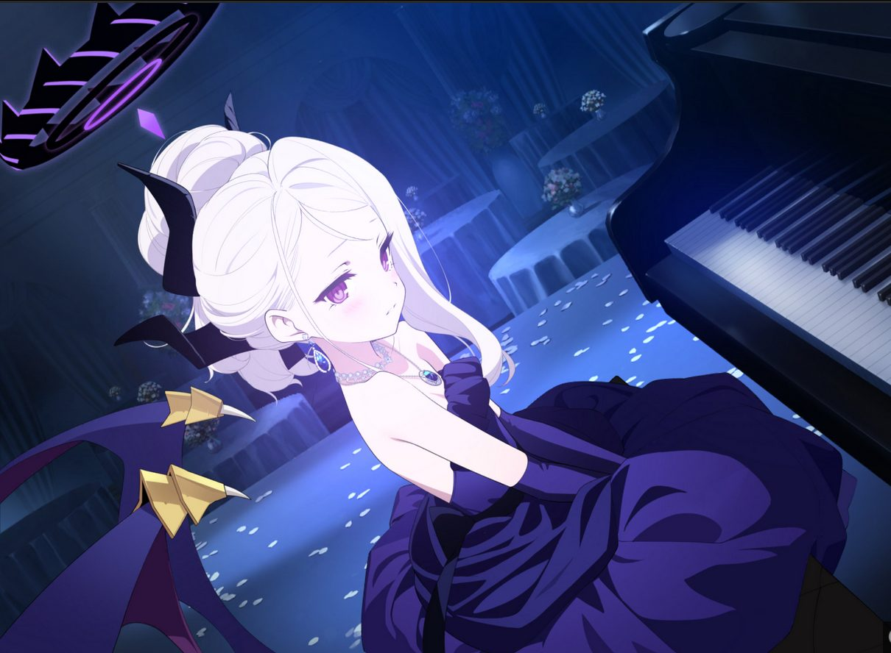
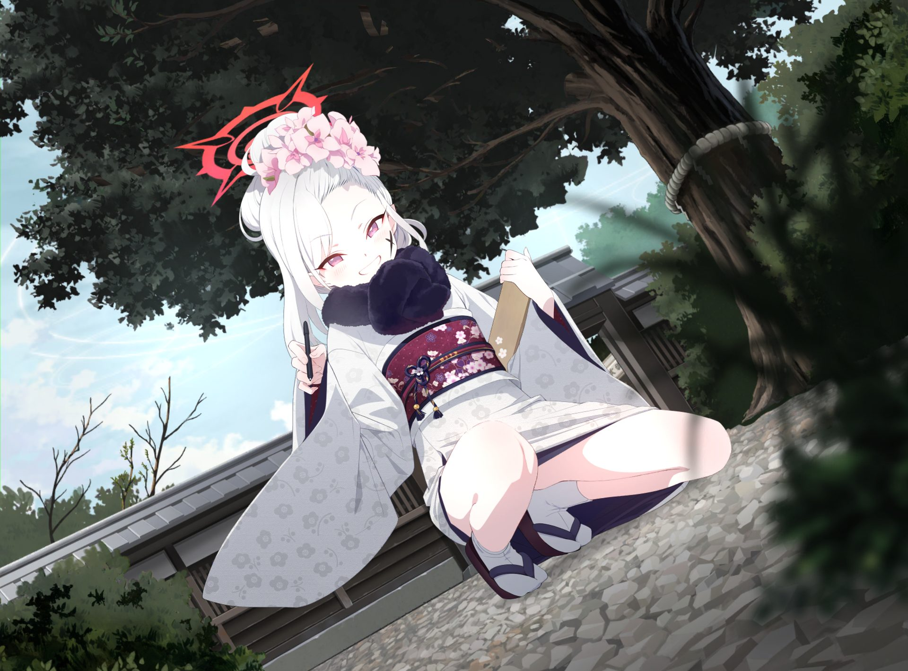
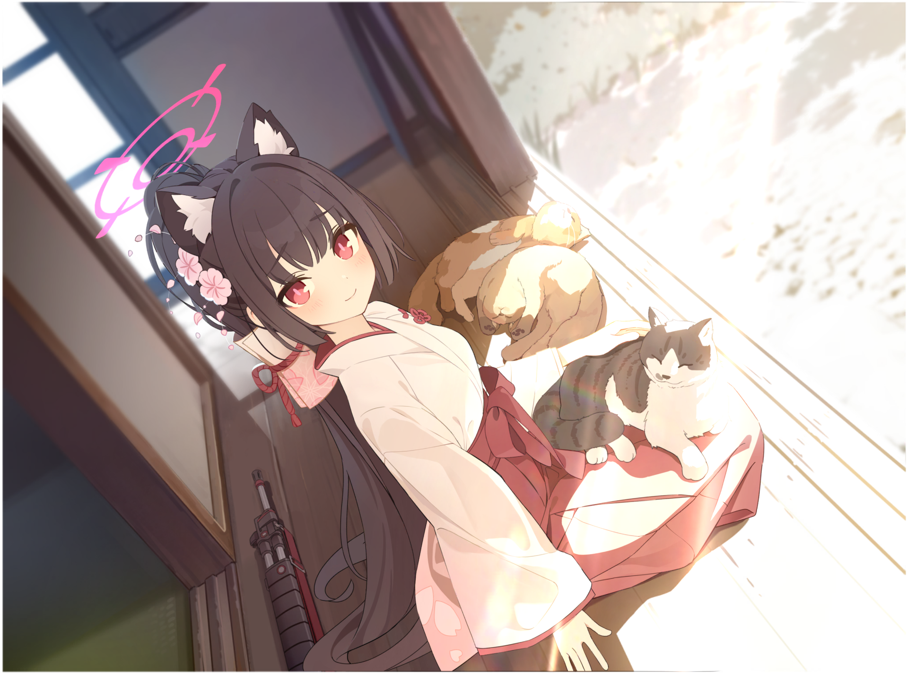

Sorasaki Hina
格黑娜学园风纪委员会委员长。虽然平时总是疲惫不堪、不想工作，但在面对威胁时，会展现出压倒性的武力。是格黑娜最强战力，也是被所有人敬畏的存在。

Asagi Mutsuki
格黑娜学园便利屋68的成员。最喜欢恶作剧和看别人困扰的样子，是个不折不扣的“小恶魔”。虽然经常惹麻烦，但她的战术头脑和爆破技巧在便利屋中首屈一指。

Kuromi Serika
阿拜多斯高中一年级学生，对策委员会成员。是个嘴硬心软的傲娇猫娘，每天都在为了偿还学校的巨额债务而辛苦打工。虽然嘴上总是抱怨，但比任何人都关心学校的命运。